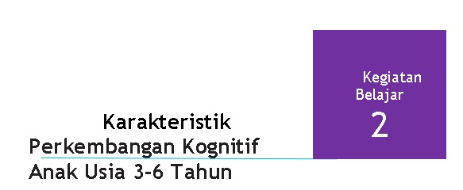

Bahasan pada Kegiatan Belajar 2 adalah mengenai ciri perkembangan kognitif anak usia 3 sampai 6 tahun.
A. KARAKTERISTIK PERKEMBANGAN KOGNITIF ANAK USIA 3 – 4 TAHUN
Kegiatan mengelompokkan lebih matang pada usia ini, ditandai dengan kemampuan anak menempatkan benda-benda yang sama dalam satu kelompok, misalnya menaruh topi pada semua boneka yang ada atau menaruh balok yang sesuai pada tempatnya (Beaty: 2013). Pada saat memasuki usia 3 tahun biasanya anak mulai menyadari apa yang ia rasakan dan apa yang telah mampu dilakukan dan belum mampu ia lakukan. Kesadaran ini didukung oleh kemampuannya yang pesat dalam perkembangan bahasa. Perbendaharaan katanya, sudah cukup banyak untuk mengomunikasikan keinginannya. Rasa egosentrisnya masih kuat, anak merasakan bahwa dirinya “pusat dunia”, dan semua hal yang ada di dunia tersedia untuk memenuhi kebutuhannya. Hal ini berpengaruh pada perilaku anak ketika bermain, ia memasuki tahap permainan paralel dimana seorang anak bermain bersama anak lain tanpa interaksi dan enggan bila mainannya dipinjam atau menolak mengembalikan mainan yang dipinjamnya. Pada usia 3 tahun ini, mereka akan lebih memahami bahwa mereka adalah orang yang terpisah dengan orang lain. Tak heran kegiatan bermain anak usia ini sering diwarnai konflik atau pertikaian, namun biasanya bersifat sementara saja..
Perilaku anak usia 3 tahun diwarnai imajinasi, umumnya mereka masih sulit untuk membedakan antara imajinasi dengan realita. Keadaan ini semua membuatnya tampak seperti pembual kecil, sebagian besar dari mereka bahkan sering kali memiliki teman imajiner. Namun hal ini tidak perlu dikhawatirkan karena kegiatan berfantasi bagi anak usia ini merupakan hal yang penting dan merupakan refelksi dari perkembangan tubuhnya yang sehat. Lambat laun imajinasi anak akan berkurang seiring dengan meningkatnya pemahamannya akan realitas yang terdapat di dunia sekitarnya.
Menurut Seefeldt dan Barbour, 1994 menjelaskan bahwa karakteristik kognitif anak usia 3-4 tahun adalah :
- Memulai ketrampilan memecahkan masalah.
- Dapat menumpuk balok dan dapat merobohkannya untuk melihat apa yang terjadi.
- Belajar untuk menggunakan keterampilan mendengarkan sebagai sarana belajar tentang kata.
- Gambar di usia 3 tahun masih mencoret tetapi dalam satu arah dan tidak berulang-ulang.
- Pada usia 4 tahun, gambar mewakili apa yang anak tahu dan berpikir bahwa hal tersebut penting.
- Berpikir perseptual yang terikat pada satu atribut dan karakteristik-karakteristik. Banyak bertanya "Kenapa?".
- Segala sesuatu di dunia memiliki alasan yang sesuai dengan pengetahuan anak
- Masih berpikir egosentric.
- Mulai berpindah dari fantasi ke kenyataan.
Tingkat pencapaian perkembangan anak dalam aspek perkembangan kognitif dapat dilihat dari sepuluh indikator untuk belajar dan pemecahan masalah menurut Patiung, dkk (2019) yaitu:
- paham bila ada bagian yang hilang dari suatu pola gambar wajah orang matanya tidak ada, mobil bannya copot;
- menyebutkan berbagai makanan dan rasanya (garam, gula atau cabai);
- menyebutkan berbagai macam kegunaan dari benda;
- memahami persamaan antara dua benda;
- memahami perbedaan antara dua hal dari jenis yang sama seperti membedakan antara buah rambutan dan pisang; perbedaan antara ayam dan kucing;
- bereksperimen dengan bahan menggunakan cara baru;
- mengerjakan tugas sampai selesai;
- menjawab apa yang akan terjadi selanjutnya dari berbagai kemungkinan;
- menyebutkan bilangan angka 10;
- mengenal beberapa huruf atau abjad tertentu dari A-Z yang pernah dilihanya.
Pada aspek perkembangan berpikir logis terdapat lima indikator yaitu:
- menempatkan benda dalam urutan ukuran (paling kecil-paling besar);
- mulai mengikuti pola tepuk tangan;
- mengenal konsep banyak dan sedikit;
- mengenali alasan mengapa ada sesuatu yang tidak masuk dalam kelompok tertentu;
- menjelaskan model atau karya yang dibuatnya.
Kemudian pada aspek perkembangan untuk berpikir simbolik ada tiga indikator pencapaian yaitu:
- menyebutkan peran dan tugasnya (misal, koki tugasnya memasak);
- menggambarkan atau membentuk sesuatu konstruksi yang mendeskripsikan sesuatu yang spesifik;
- melakukan aktivitas bersama teman dengan terencana (bermain berkelompok dengan memainkan peran tertentu seperti yang telah direncanakan.
Menurut Bina Keluarga Balita Badan Koordinasi Keluarga Berencana Nasional dalam Menjadi Orangtua Hebat dalam Mengasuh Anak (2014), disebutkan bahwa karakteristik kognitif anak usia 3-4 tahun antara lain:
- Memahami pengertian sebab akibat.
- Memahami dan melaksanakan 2-4 perintah.
- Dapat membandingkan 2 benda.
- Mengerti perbandingan ukuran.
- Bicara dalam kalimat-kalimat yang terdiri dari 3 kata.
- Mampu menyebutkan jenis kelamin, usia dan menyebutkan nama saudara kandung.
- Mampu menceritakan kejadian yang kata-kata sederhana.
- Mengenal dan memasangkan 4-5 warna.
- Menjelaskan mengenai apa yang dilakukan atau dilihat dengan pertanyaan “apa”, “mengapa”,” bagaimana”.
- Mengelompokan benda yang sama dan sejenis.
Disarikan dari Brewer (2007) dan Diane Trister Dodge dan Laura J. Colker (2000), maka karakteristik kognitif anak usia 3-4 tahun sebagai berikut:
1. Pemikiran Logis dan Matematik Memberi alasan
- Anak mampu melakukan penyortiran semua peralatan makan di area kerumah-tanggaan ke dalam tumpukan barang untuk plat, barang-barang perak, perkakas dapur dan seterusnya.
- Anak mampu menggolongkan benda dalam ukuran yang berbeda di tempat penyimpanan.
- Penyortiran semua krayon, penanda, dan pensil ke dalam kontainer.
- Membandingkan menetapkan, menggunakan kategori seperti " lebih banyak" dan " lebih sedikit".
2. Statistik dan peluang
- Anak dapat mengamati perbedaan ketika makanan kecil aneka pilihan yang telah diatur di atas baki.
- Anak dapat mengamati dan membandingkan banyaknya hari cerah, hari berawan, atau hari berhujan menandai berdasarkan penanggalan.
3. Pengukuran
- Menemukan suatu benda panjang yang sesuai dengan cirinya ditentukan.
- Menemukan suatu benda panjang yang sesuai dengan cirinya ditentukan.
- mengukur untuk sepatu yang baru atau pakaian baru.
- Dapat menggunakan dua dan tiga dimansional obyek berbagai bentuk.
4. Membuat pola, meliputi:
- membuat pola sederhana dengan manik-manik.
- membangun pola AB AB dengan balok atau dalam membangun balok berdasarkan warna.
- membangun pola AB AB dengan balok atau dalam membangun balok berdasarkan ukuran.
- bertepuk tangan sesuai irama.
B. KARAKTERISTIK PERKEMBANGAN KOGNITIF ANAK USIA 4-5 TAHUN
Sebagian besar anak usia 4-5 tahun telah bisa melakukan pengelompokkan sejati yaitu mengelompokkan beda secara terpisah berdasarkan ciri-ciri umumnya seperti warna. Masalah yang mereka hadapi adalah konsistensi, karena mereka kesulitan mengingat hal yang menjadi dasar pengelomopkan tersebut. Contohnya, awalnya anak mengelompokkan benda bersarkan warnanya, kemudian pada pertengahan waktu beralih pada ciri lain seperti bentuk (Beaty: 2013). Pada tahapan selanjutnya, sekitar usia 4 tahun seorang anak semakin bersemangat untuk mempelajari hal-hal baru. Keadaan ini ditandai dengan semakin sering nya anak mengajukan pertanyaan sebagai wujud dari rasa keingin tahuannya, seperti : “kenapa adik bayi harus minum susu ibu?” atau “ bagaimana terjadinya pelangi?”. Rasa ingin tahu anak semakin hari semakin banyak dengan variasi pertanyaan yang juga semakin kompleks termasuk juga masalah seksual. Suatu hari, anak mungkin akan bertanya: “Bagaimana cara ia lahir ke dunia ini?”. Bahkan bukan tak mungkin akan didapati seorang anak sedang memegang atau memeriksa alat genitalnya. Sebagian orang tua tentunya akan merasa bingung dan atau kesal dengan polah tingkah anaknya. Namun, sebenarnya hal ini tidak terlalu dikhawatirkan dan perlu diingat bahwa keadaan ini merupakan fase normal yang biasa dilewati setiap anak. Maka bantulah anak melewati fase ini dengan baik dengan sikap bijaksana, cara memberikan penjelasan yang bersifat wajar dan disesuaikan dngan tingkat kemampuan berpikirnya.
Pada umumnya pada akhir usia yang keempat, daya khayal anak semakin menipis seiring dengan meningkatnya kemampuan memahami realitas. Kemampuan mengatasi masalah pun meningkat, anak mulai mahir mengungkapkan apa yang dirasakannya dengan cara yang lebih tepat. Penyesuaian diri dengan lingkungannya ini disebabkan oleh kemampuannya membedakan salah dan benar. Kontrol internal ini memudahkan anak bergaul dengan teman sebayanya. Hal ini juga berdampak terhadap perubahan tahapan main anak, yaitu dari tahap bermain asosiatif (terjadi interaksi dalam kelompok bermain namun masih sering terjadi konflik) ke tahap bermain kooperatif (mampu bekerjasama, mendengarkan dan merespons dengan tepat) saat anak sedang bermain.
Menurut Bina Keluarga Balita Badan Koordinasi Keluarga Berencana Nasional dalam buku Menjadi Orangtua Hebat dalam Mengasuh Anak (2014) disebutkan bahwa karakteristik kognitif anak usia 4-5 antara lain ditunjukkan oleh:
- Mengikuti 3 perintah yang tidak berhubungan.
- Mengerti pembicaraan orang lain tentang ukuran.
- Mendengar cerita yang panjang.
- Mengerti urutan kegiatan.
- Menggabungkan kalimat.
- Bertanya dengan pertanyaan: kapan, bagaimana, mengapa, siapa.
- Berbicara tentang hubungan sebab akibat.
- Menceritakan sesuatu sesuai kemampuan.
- Bermain dengan kata-kata yang mempunyai bunyi sama.
- Menunjukkan lebih dari 10 bagian tubuh dan mengetahui fungsinya.
- Mencocokkan bentuk bulat, kotak, setengah lingkaran dan segitiga.
- Dapat menunjukan bentuk bulat, kotak, setengah lingkaran dan segitiga.
- Mengerti konsep lawan kata.
- Paham konsep arah (depan, belakang, atas, bawah,tinggi-rendah, buka-tutup).
- Tahu kegunaan suatu benda.
- Memahami apa yang harus dilakukan dalam situasi tertentu.
Disarikan dari Brewer (2007) dan Diane Trister Dodge dan Laura J. Colker (2000), maka karakteristik anak usia 4-5 tahun tercantum dalam tabel berikut:
| N | Dimensi | N | Indikator Perkembangan |
| 1 | Pemikiran Logis dan Matematika | 1 | Mengumpulkan mainan dalam satu tempat |
| 2 | Menyortir berbagai benda | ||
| 3 | Mengklasifikasi benda berdasarkan ukuran | ||
| 4 | Membandingkan dengan cara 'lebih sedikit', 'lebih banyak' | ||
| 2 | Statistik dan Peluang | 1 | Mengamati perbedaan berbagai makanan yang tersaji dalam nampan |
| 2 | Mengamati dan membandingkan jumlah hari yang cerah, hari berawan, hari hujan berdasarkan kalender | ||
| 3 | Pengukuran | 1 | Menunjukkan suatu yang baru atau berbeda |
| 2 | Menunjukkan kesamaan suatu benda | ||
| 3 | Menunjukkan persamaan dan perbedaan | ||
| 4 | Mengukur dengan benda tertentu misalnya timbangan badan | ||
| 5 | Menemukan balok untuk mengisi tempat kosong yang ukurannya sesuai. | ||
| 6 | Mengukur benda milik anak-anak seperti sepatu, baju. | ||
| 7 | Menggunakan berbagai ukuran yang berbeda di area pasir dan air | ||
| 8 | Menggunakan balok untuk membuat menara atau gedung dengan panjang dan tinggi yang sesuai dengan benda contoh | ||
| 4 | Geometri | 1 | Menggunakan 2-3 dimensi objek dari berbagai bentuk benda dan menemukan ciri-ciri dari bentuk tersebut. |
| 5 | Pola dan Fungsi | 1 | Membuat pola sederhana dengan manik-manik dan bangunan baloknya |
| 2 | Membuat pola dengan 2 warna dari kubus atau 2 ukuran dari balok | ||
| 3 | Mencatat hari dalam sepekan di kalender dengan alternatif pola misalnya: daun-bunga-daun-bunga, dst. | ||
| 4 | Membuat pola dengan 2 warna dari lap makan saat makan. | ||
| 5 | Membuat pola dari unit balok besar dan kecil. | ||
| 6 | Bertepuk tangan berdasarkan irama atau musik | ||
| 6 | Pemecahan Masalah | ||
| a | Mengobservasi objek dan kejadian dengan serius | 1 | Melihat dan menyentuh objek yang diperlihatkan |
| 2 | Mengeksplorasi peralatan di lingkungannya | ||
| 3 | Menjelaskan dengan perhatian khusus pada detail, | ||
| 4 | Menunjukkan karakteristik suatu objek | ||
| b | Pendekatan terhadap masalah secara fleksibel | 1 | Meniru orang dewasa/teman dalam memecahkan masalah |
| 2 | Mengulangi dan melakukan coba ralat | ||
| 3 | Menemukan berbagai cara menggunakan benda di dalam kelas. | ||
| c | Menunjukkan ketetapan dalam tugas | 1 | Tetap terlibat dalam tugas dalam jangka waktu lama |
| 2 | Tetap telibat dalam aktivitas yang dipilih sendiri, seperti bermain play dough | ||
| 3 | Mengerjakan tugas yang mudah terlebih dulu sebelum melanjutkan tugas berikutnya | ||
| d | Mengeksplorasi sebab akibat | 1 | Menjadi lebih peduli dengan akibat/dampak |
| 2 | Memperhatikan dan menanggapi 'akibat' | ||
| e | Mengaplikasikan pengetahuan atau pengalaman terhadap konteks yang baru | 1 | Mengikuti kegiatan rutin (makan, toilet) dan masih membutuhkan bantuan |
| 2 | Menggambarkan pengalaman setiap hari dan menngaplikasikan pengetahuan tersebut untuk pengalaman yang serupa |
Keterampilan kognitif anak usia empat sampai lima tahun meliputi : (1) menunjukkan warna coklat, hitam, merah muda, abu-abu, putih, hijau, kuning, orange dan ungu ketika diminta; (2) mencocokkan segitiga, segiempat dan belah ketupat; (3) menyebutkan lingkaran dan kotak jika diperlihatkan; (4) menunjukkan segitiga, segiempat dan belah ketupat jika diminta (5) memahami konsep lambat/ cepat, sedikit/ banyak (6) tipis /tebal, sempit/luas; (6) menunjukkan pemahaman konsep atas /bawah, diantara, di depan/belakang, mejauhi/menuju, rendah/tinggi; (7) menggolongkan gambar objek yang berbeda; (8) memahami apa yang dilakukan jika haus, sepatu lepas, ke luar saat hujan; (9) menerangkan mengapa memilki sesuatu; (10) menyentuh dan menghitung 4-7 benda; (11) merangkaikan kegiatan sehari-hari; (12) mengetahui nama jalan dan kota; dan (13) menceritakan kembali tiga gagasan utama dari suatu cerita (Coughlin, 1998).
Perkembangan kognitif usia tiga sampai empat tahun menurut Brewer antara lain: (1) mengikuti instruksi dari dua perintah; (2) impulsif dan sering berbuat salah; (3) mengembangkan kosa kata dengan cepat; (4) memiliki kesulitan membedakan fantasi dan kenyataan; (5) mulai mengklasifikasikan; (6) mulai menggunakan beberapa kata abstrak fungsional;(7) "Mengapa?" pertanyaan yang konstan; dan (8) berpikir sangat egosentris. Sedangkan perkembangan kognitif untuk anak usia lima sampai enam tahun adalah : (1) menunjukkan rentang perhatian yang berkembang; (2) mampu seriasi benda; (3) mampu mengelompokkan objek; (4) impulsif mulai berkurang; (5) membedakan antara fantasi dan kenyataan; (6) menggunakan agresivitas bahasa, dalam kategorisasi; (7) menyadari bahwa kata-kata dan gambar mewakili benda nyata; (8) menjadi tertarik angka dan huruf; (9) tahu nama-nama warna; (10) tidak spontan menggunakan latihan dalam tugas-tugas memori; (11) mengikuti tiga perintah yang tidak terkait; dan (12) mulai konservasi jumlah dan panjang (Brewer, 2007).
Menurut Billman and Sherman (1996), kemampuan kognitif yang ditunjukkan anak empat sampai enam tahun adalah: (1) melanjutkan untuk memperoleh informasi dan memberi label; (2) berpikir terutama di masa sekarang, berpikir terbatas pada pengalaman aktual, (3) ingin tahu tentang lingkungan; (4) tertarik dengan hal yang sekarang dan segera; (5) tertarik pada pengetahuan yang praktis dan akurat; (6) mengajukan pertanyaan yang terarah; (7) menggunakan pola kalimat yang bervariasi; (8) mengartikulasikan dengan jelas; (9) memiliki kosakata yang memadai untuk mengungkapkan pikiran.
Menurut Beaty (2013), kemampuan kognitif anak usia empat sampai lima tahun adalah: (1) mengelompokkan, misalnya mengelompokkan warna. Di usia 5 tahun anak dapat memilah benda menjadi kumpulan irisan seperti mengelompokkan benda berdasarkan warna dan ukuran benda; (2) dapat membuat pola; dan (3) menghitung sampai angka 20.
Kemampuan kognitif anak usia tiga sampai lima tahun meliputi tujuh kemampuan yaitu: (1) ketrampilan memahami belajar dan memecahkan masalah; (2) memperluas kemampuan berpikir logis; (3) memperoleh konsep dan informasi yang mengarah pada pemahaman yang lebih lengkap tentang dunia yang berubah; (4) keterampilan bermain peran; (5) keterampilan komunikasi verbal; (6) keterampilan membaca permulaan; dan (7). Keterampilan menulis permulaan. Sedangkan keterampilan memahami belajar dan memecahkan masalah mencakup : (1) menunjukkan minat dalam mengeksplorasi; (2) bertanya dan menanggapi pertanyaan; (3) menunjukkan rasa ingin tahu dan keinginan untuk belajar; (4) menggunakan keterampilan perencanaan; (5) suka mengamati dan menemukan sendiri; (6) menemukan lebih dari satu solusi untuk tiap masalah; (7) menerapkan informasi dan pengalaman untuk konteks yang baru; (8) menggunakan kreativitas dan imajinasi; dan (9) bertahan dalam tugas (Dodge & Colker, 2000).
Masih menurut Dodge & Colker (2000), keterampilan dalam berpikir logis meliputi : (1) mengelompokkan benda berdasar persamaan dan perbedaan; (2) mengumpulkan benda yang dimiliki bersama; (3) mengingat urutan peristiwa ( pertama, kedua, lalu,..); (4) mengurutkan benda secara berseri (dari kecil ke besar); (5) mengenali pola dan dapat mengulanginya; (6) meningkatkan kesadaran hubungan sebab. Untuk memperoleh konsep dan informasi yang mengarah pada pemahaman yang lebih lengkap tentang dunia yang berubah: (1) menunjukkan kesadaran konsep waktu; (2) menyebutkan nama objek dan peristiwa; (3) membuat perbandingan (misalnya lebih/kurang, lebih besar/kecil, tinggi/pendek); (4) menggunakan kata-kata untuk menggambarkan karakteristik objek (misalnya warna, bentuk); (5) mengidentifikasi hubungan objek dalam ruang (di bawah, di dalam); (6) menghitung urutan yang benar; dan (7) menjodohkan pasangan satu-satu.
Menurut Papalia, Olds, and Fereman (1990), perkembangan bahasa anak usia empat sampai lima tahun : (1) menggunakan kalimat 4 atau 5 kata berbentuk deklaratif, negatif (saya tidak lapar), interogatif (kenapa saya tidak boleh main di luar?) atau imperatif (tangkap bolanya); (2) merangkai kalimat dalam narasi yang panjang (..lalu...,lalu...) melaksanakan perintah dalam satu langkah; (3) dapat mengetahui 2 kata yang merujuk pada objek atau tindakan yang sama; (4) kebanyak anak usia 5 tahun sudah bisa menyesuaikan apa yang mereka katakan dengan apa yang diketahui oleh pendengar. Menurut Beaty, usia 3, 4 dan 5 tahun merupakan usia perkembangan bahasa yang paling cepat. Dari frasa yang sederhana menjadi kalimat yang panjang dan kompleks.
Menurut Marotz and Allen dalam Beaty (2013), perkembangan perseptual kognitif anak usia 4-5 tahun adalah: (1) dapat membuat piramid dari 6 baloks; (2) dapat membedakan kata yang mempunyai kemiripan suara; (3) dapat menuliskan namanya sendiri; (4) mulai bisa membaca kata-kata sederhana dalam buku bergambar; (5) senang cerita tentang bagaimana sesuatu dan bagaimana menjalankannya; (6) mengerti konsep paling tingi, paling besar, sama,dan lebih; (7) menghitung sampai 20; (8) mengerti tentang hubungan/urutan benda atau kegiatan sehari-hari misalnya bangun tidur menggunakan baju, sarapan, gosok gigi kemudian berangkat ke sekolah; (9) memilah, mengelompokkan dan membuat pola benda dengan atribut yang bervariasi (dari kecil sampai besar, warna dan ukuran); dan menyusun puzzle
Bahwa dapat disimpulkan karakteristik kognitif anak empat sampai lima tahun adalah: (1) memotivasi dan memecahkan masalah: menunjukkan keingintahuan, menunjukkan pemikiran yang membangun, membuat perkiraan, dan menujukkan hasrat untuk memecahkan masalah; (2) cara berpikir logis dan matematis : kemampuan mengamati, membandingkan, mengurutkan, mengelompokkan, membuat pola, memahami bentuk geometris, dan menghitung 4-7 benda; (3) penerimaan pengetahuan dan informasi : memahami konsep waktu dan warna; (4) kemampuan berbahasa menunjukkan kemampuan bicara, menunjukkan keaksaraan, dan menunjukkan penerimaan bahasa.
C. KARAKTERISTIK PERKEMBANGAN KOGNITIF ANAK USIA 5-6 TAHUN
Menurut Bina Keluarga Balita Badan Koordinasi Keluarga Berencana Nasional dalam Menjadi Orangtua Hebat dalam Mengasuh Anak (2014), karakteristik perkembangan kognitif anak usia 5-6 tahun adalah:
- Penyortiran tombol, kunci, atau lain objek ke dalam kelompok dan kemudian menjelaskan ukuran-ukuran dengan mengelompokkannya.
- Membuat grafik informasi seperti saat memilih aneka makanan kecil, jenis sepatu atau buku favorit.
- Kemampuan pengukuran seperti mengukur tingginya mereka dengan potongan benang.
- mengukur ketinggian bangunan balok mereka atau menentukan berapa banyak pekerjaan ubin konstruksi milik mereka [meliput/tutup] [ke/di] atas lantai.
- Memperkirakan missal berapa jumlah langkah lagkah orang yang menyeberang atau resep yang diperlukan dalam pengalaman memasak.
- Memperkirakan banyaknya kertas yang diperlukan untuk menutup sesuatu.
- Membuat pola.
- Menemukan angka.
Disarikan dari Brewer (2007) dan Diane Trister Dodge dan Laura J. Colker (2000), maka karakteristik anak usia 4-5 tahun tercantum dalam tabel berikut:
| No. | Dimensi Perkembangan | No. | Indikator Perkembangan |
| 1 | Pemikiran Logis dan Matematika | 1 | Menyortir benda dan menjelaskan kriteria yang digunakan |
| 2 | Membuat diagram venn menggunakan tali/benang | ||
| 3 | Menyortir berbagai binatang bedasarkan kriteria tertentu: binatang buas, binatang ternak | ||
| 4 | Menemukan tanda geometri dalam lapangan bentuk tertentu sambil berjalan | ||
| 2 | Statistik dan Peluang |
1 | Membuat sensus sederhana, misalnya; tentang pilihan waktu makan |
| 2 | Membuat grafik sederhana, misal: tentang cara menuju TK (berjalan kaki. Naik motor, naik angkutan umum), jenis sepatu yang dipakai anak | ||
| 3 | Menghitung buku favorit tiap anak dan disajikan dalam bentuk turus (tally) | ||
| 3 | Pengukuran | 1 | Mengukur tinggi dengan potongan benang atau kertas dan menggantungkan/menandai garis di dinding untuk perbandingan |
| 2 | Mengukur meja dengan jengkal tangan atau dengan berbagai ukuran dari tubuh/benda: langkah, sepatu. | ||
| 3 | Mengukur ruang kelas dengan jumlah langkah kaki | ||
| 4 | Menentukan jumlah lembar kertas yang diperlukan untuk taplak meja. | ||
| 5 | Mengukur kain yang diperlukan untuk sprei tempat tidur | ||
| 6 | Menggunakan kontainer berbagai ukuran untuk standar dalam menakar pasir dan air dengan menggunakan cangkir atau gelas ukur | ||
| 7 | Mengukur jumlah bahan yang diperlukan untuk memasak | ||
| 8 | Memperkirakan ukuran suatu benda dengan benang | ||
| 9 | Mengukur tinggi dari bangunan balok atau menentukan jumlah kotak lantai yang digunakan untuk membangun balok. | ||
| 4 | Geometri | 1 | Menyortir benda dan menjelaskan kriteria yang digunakan |
| 5 | Pola dan Fungsi |
1 | Melanjutkan pola konstruksi dengan berbagai jenis benda |
| 2 | Mengisi pola dengan beberapa elemen pada huruf 3 dimensi | ||
| 3 | Membuat pola dari nama sendiri dan menggunakan berbagai pola dengan angka | ||
| 4 | Memberi warna pada tiap hari kedua atau ketiga setiap pekan di kalender | ||
| 5 | Menemukan pola angka dari kalender, atau grafik yang telah dibuat, dan berbagai jenis angka yang digunakan di kelas | ||
| 6 | Mengamati pola wallpaper di dinding, dan memperhatikanperubahan pola karena rotasi atau dilipat. | ||
| 6 | Pemecahan Masalah | ||
| a | Mengobservasi objek dan kejadian dengan serius | 1 | Menunjukkan dan bertanya tentang persamaan dan perbedaan. |
| 2 | Mengobservasi dengan penuh perhatian dan mencari | ||
| b | Pendekatan terhadap masalah secara fleksibel | 1 | Bereksperimen dengan cara baru ketika suatu cara tidak berfungsi |
| 2 | Menemukan alternatif pemecahan masalah | ||
| c | Menunjukkan ketetapan dalam tugas | 1 | Terus mengerjakan tugas meskipun menemukan kesulitan |
| 2 | Mengerjakan tugas lebih lama, meninggalkannya sebentar dan kembali untuk menyelesaikannya. | ||
| d | Mengeksplorasi sebab akibat | 1 | takjub dengan apa yang akan terjadi selanjutnya' |
| 2 | Mencoba berbagai macam kemungkinan | ||
| 3 | Menjelaskan rencana untuk menguji coba sebab akibat | ||
| 4 | Mencoba idenya | ||
| e | Mengaplikasikan pengetahuan atau pengalaman terhadap konteks yang baru | 1 | Mengaplikasikan informasi atau kosa kata dalam kegiatan sehari-hari |
| 2 | Menggeneralisasi suatu aturan, strategi, atau ide dari pengalaman dan mengaplikasikannya dalam konteks yang baru |